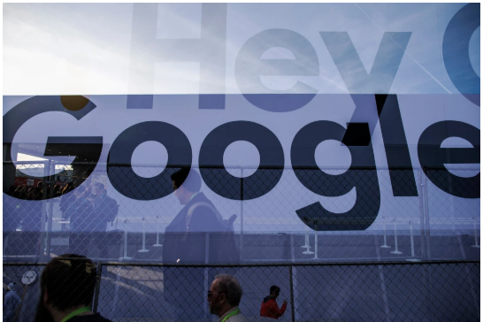

만든이 : 유재혁
1. Tech
U.S.Accuses Google of Illegally Protecting Monopoly
A victory for the government could remake one of America's most recognizable companies
and the internet economy that it has helped define.

washington-The Justice Department accused Google on Tuesday of illegally protecting its monopoly over search and serch advertising, the goverment's most significant challenge to a tech company's market power in a generation and one that could reshape the way consumers use the internet.
In a much-anticipated lawsuit, the agency accused Google of locking up deals with giant partners like Apple and throttling compertition through exclusive business contracts and agreements.
Google's deals with Apple, mobile carriers and other handset makers to make its search engine the default option for users accounted for most of its dominant market share in search, the agency said, a figure that it put at around 80 persent.
"For many years,"The agency said in its 57-page complaint,"Google has used anticompetitive tactics to maintain and extend its monopolies in the markets for general search services, search advertising and general search text advertising-the cornetstones of its empire."
The lawsuit, which may stretch on for years, could set off a cascade of other antitrust lawsuits from state attorneys general.
About four dozen states and jurisdictions, including New York and Texas, have conducted parallel investigationts against the company's grip on technology for online advertising.
Eleven state attorneys general, all Republicans, signed on to support the federal lawsuit.
Attorney General William P. Barr had spoken publicly about the investigation for months.
He urged the agency to file a case by the end of September, prompting resistance from some of its lawyers who wanted more time and complained of political motivations.
Google called the suit “deeply flawed.” But the agency’s action signaled a new era for the technology sector. It reflects pent-up and bipartisan frustration toward a handful of companies — Google, Amazon, Apple and Facebook in particular — that have evolved from small and scrappy companies into global powerhouses with outsize influence over commerce, speech, media and advertising. Conservatives like President Trump and liberals like Senator Elizabeth Warren have called for more restraints over Big Tech.
The suit, filed in the U.S. District Court in the District of Columbia, will also be a major test of antitrust law. Many Democrats argue that the laws need to be adjusted to account for the digital era, when many products are free and it can be more difficult to prove the harm to consumers from a company’s firm grip on a market.
A victory for the government could remake one of America’s most recognizable companies and the internet economy that it has helped define since it was founded by two Stanford University graduate students in 1998. The Justice Department did not immediately put forward remedies, such as selling off parts of the company or unwinding business contracts, in the lawsuit. Such actions are typically pursued in later stages of a case.
Ryan Shores, an associate deputy attorney general, said “nothing is off the table” in terms of remedies.
Google has long denied accusations of antitrust violations, and the company is expected to fight the government’s efforts by using its global network of lawyers, economists and lobbyists. Alphabet, valued at $1.04 trillion and with cash reserves of $120 billion, has fought similar antitrust lawsuits in Europe. The company spent $12.7 million lobbying in the United States in 2019, making it one of the top corporate spenders in Washington.
The company says it has strong competition in the search market, with more people finding information on sites like Amazon. It says its services have been a boon for small businesses.
“People use Google because they choose to, not because they’re forced to, or because they can’t find alternatives,” Kent Walker, the company’s chief legal officer, said in a blog post.
Mr. Walker said the lawsuit would do “nothing to help consumers. To the contrary, it would artificially prop up lower-quality search alternatives, raise phone prices and make it harder for people to get the search services they want to use.”
Democratic lawmakers on the House Judiciary Committee released a sprawling report on the tech giants two weeks ago, also accusing Google of controlling a monopoly over online search and the ads that come up when users enter a query.
“A significant number of entities — spanning major public corporations, small businesses and entrepreneurs — depend on Google for traffic, and no alternate search engine serves as a substitute,” the report said. The lawmakers also accused Apple, Amazon and Facebook of abusing their market power. They called for more aggressive enforcement of antitrust laws, and for Congress to consider strengthening them.
The scrutiny reflects how Google has become a dominant player in communications, commerce and media over the last two decades. That business is lucrative: Last year, Google brought in $34.3 billion in search revenue in the United States, according to the research firm eMarketer. That figure is expected to grow to $42.5 billion by 2022, the firm said.
In its complaint, the Justice Department said that Google’s actions had hurt consumers by stifling innovation, reducing choice and diminishing the quality of search services, including consumer data privacy. It also said that advertisers that use its products “must pay a toll to Google’s search advertising and general search text advertising monopolies.”
The lawsuit is the result of an investigation that has stretched for more than a year. Prosecutors have spoken with Google’s rivals in technology and media, collecting information and documents that could be used to build a case.
The Justice Department also investigated Google’s behavior and acquisitions in the overall market for digital advertising, which includes search, web display and video ads.
But the search case is the most straightforward, giving the government its best chance to win. To prevail, the Justice Department has to show two things: that Google is dominant in search, and that its deals with Apple and other companies hobble competition in the search market.
The Justice Department said Google estimates that almost 50 percent of its search traffic originated on Apple devices in 2019. Because it is such a large portion of its queries, Google pays the iPhone maker an estimated $8 billion to $12 billion a year to remain the default option on its phones, iPads and Mac computers.
That arrangement has made Apple and Google hugely reliant on each other, while edging out other search engines and, according to the government, protecting Google’s monopoly. Inside Google, losing its pole position on iPhones is considered a “Code Red” scenario, according to the lawsuit, while at Apple, Google’s payments account for roughly 15 to 20 percent of Apple’s profits.
Gene Kimmelman, a former senior antitrust official at the agency, said the case focused on how Google’s lock on search allowed it to “control a treasure trove of user data and deny access to competitors.” He said the focus on contracts was significant because some were made when Microsoft’s Bing and Yahoo posed a competitive threat to Google’s search.
In its blog post, Google argued that there was nothing wrong with its agreements with Apple, other handset manufacturers and carriers, comparing them to cereal brands paying for prominent placement on store shelves. It also said it was not difficult for consumers to switch default settings from Google to another search engine.
Mr. Barr, a former telecom executive at Verizon who once argued an antitrust case before the Supreme Court, signaled that he would put the tech giants under new scrutiny at his confirmation hearing in early 2019. He said that “a lot of people wonder how such huge behemoths that now exist in Silicon Valley have taken shape under the nose of the antitrust enforcers.”
He put the investigation under the control of his deputy, Jeffrey Rosen, who in turn hired Mr. Shores, an aide from a major law firm, to oversee the case and other technology matters. Mr. Barr’s grip over the investigation tightened when the head of the Justice Department’s antitrust division, Makan Delrahim, recused himself from the investigation because he represented Google in its acquisition of the ad service DoubleClick in 2007.
Mr. Barr wanted prosecutors to wrap up their inquiries — and decide whether to bring a case — before Election Day. While Justice Department officials are usually tight-lipped about their investigations until a case is filed, Mr. Barr publicly declared his intention to make a decision on the Google matter by the end of the summer.
This year, most of the roughly 40 lawyers building the case said they opposed bringing a complaint by Mr. Barr’s Sept. 30 deadline. Some said they would not sign the complaint, and several left the case this summer.
Google last faced serious scrutiny from an American antitrust regulator nearly a decade ago, when the Federal Trade Commission investigated whether it had abused its power over the search market. The agency’s staff recommended bringing charges against the company, according to a memo reported on by The Wall Street Journal. But the agency’s five commissioners voted in 2013 not to bring a case.
Other governments have been more aggressive toward the big tech companies. The European Union has brought three antitrust cases against Google in recent years, focused on its search engine, advertising business and Android mobile operating system. Regulators in Britain and Australia are examining the digital advertising market, in inquiries that could ultimately implicate the company.
“It’s the most newsworthy monopolization action brought by the government since the Microsoft case in the late ’90s,” said Bill Baer, a former chief of the Justice Department’s antitrust division. “It’s significant in that the government believes that a highly successful tech platform has engaged in conduct that maintains its monopoly power unlawfully, and as a result injures consumers and competition.”
Google and its allies will most likely criticize the suit as politically motivated. The Trump administration has attacked Google, which owns YouTube, and other online platform companies as being slanted against conservative views.
The lawsuit is likely to outlast the Trump administration. The Justice Department spent more than a decade taking on Microsoft.
Google’s representatives said they anticipated that it would be at least a year before the case went to trial.